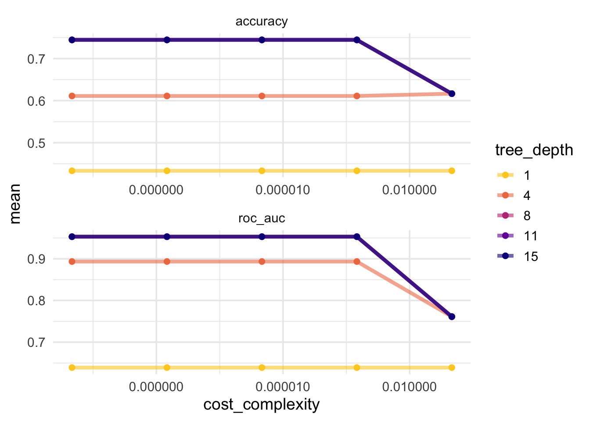
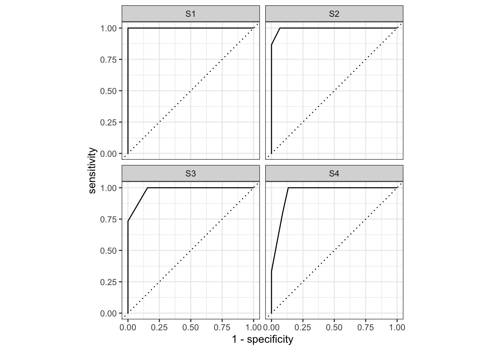
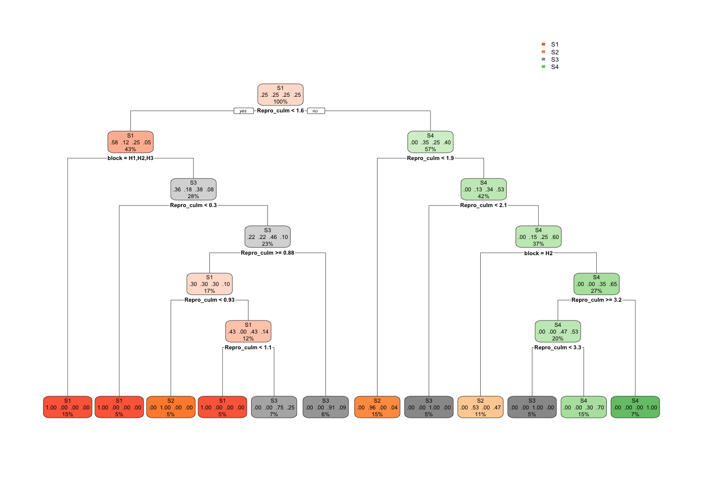
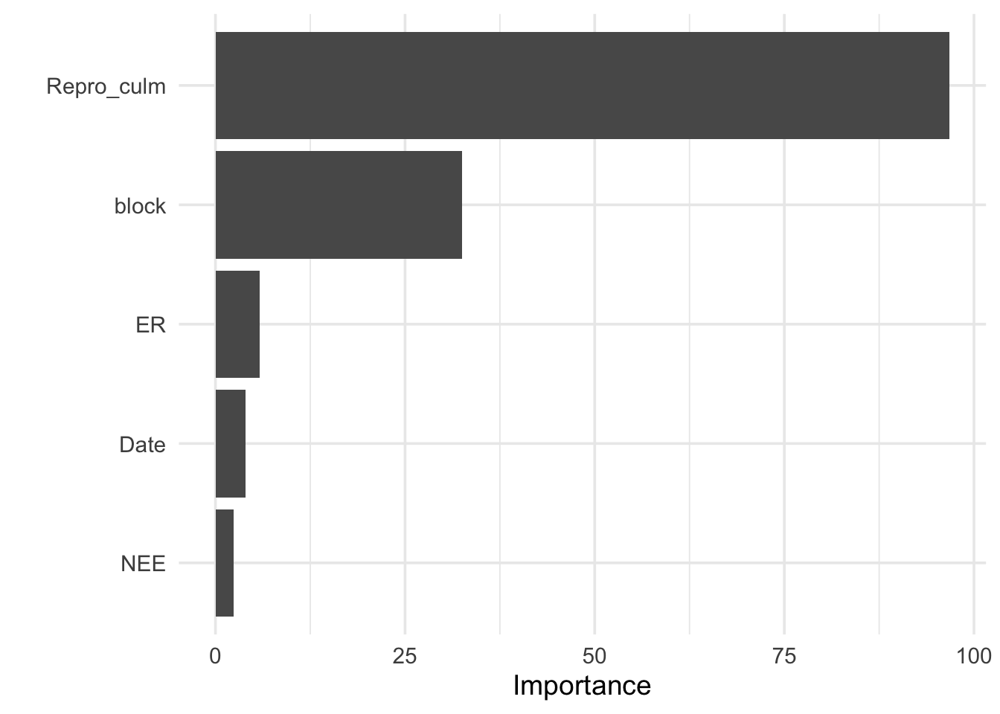

library(tidymodels) # for the parsnip package, along with the rest of tidymodels
# Helper packages
library(RCurl) # for reading in text files from a URL
library(rpart.plot) # for visualizing a decision tree
library(vip) # for variable importance plots
# Set theme for ggplots
theme_set(theme_minimal(base_size = 14))
theme_update(legend.position = "right")Tidymodels: Tune Model Parameters
Description
Python has taken most of the hype as the most widely used programming language for machine learning. This has left R users with a choice: 1. learn Python or 2. don’t do machine learning very well. Enter tidymodels, Posit’s solution to machine learning in R, using a framework similar to the tidyverse.
In this session of the Classical Machine Learning workshop series, we will measure how well a model predicts new data utilizing the tidymodels framework in R. This is the first necessary step towards the more sophisticated models that we will deploy later in this series.
This workshop borrows heavily from open source materials hosted on tidymodels.org found here. The author replaced the original cells data with (Zhang et al. 2021) which is described below. As a result, much or the text was changed to reflect a different classification problem.
Objectives:
- Load and examine data
- Build and fit a model to predict
- Tube hyperparameters
- Model tuning with a grid
- Finalize the model
Introduction
Some model parameters cannot be learned directly from a data set during model training; these kinds of parameters are called hyperparameters. Some examples of hyperparameters include the number of predictors that are sampled at splits in a tree-based model (we call this mtry in tidymodels) or the learning rate in a boosted tree model (we call this learn_rate). Instead of learning these kinds of hyperparameters during model training, we can estimate the best values for these values by training many models on resampled data sets and exploring how well all these models perform. This process is called tuning.
To use code in this article, you will need to install the following packages: RCurl, rpart, rpart.plot, tidymodels, and vip.
Precipitation temporal repacking data
In our previous Evaluate your model with resampling article, we introduced a data set of bunchgrass samples that were labeled S1-S4, representing four field precipitation treatments. We trained a random forest model to predict which samples are classified as what treatment, so that a biologist could assess whether the features actually correspond to the treatments. Note that a statistical model could perform this as well, but its a valuable case use nonetheless since new data may be missing treatment labels. We used resampling to estimate the performance of our model on this data.
Let’s again use the data from (Zhang et al. 2021) which is from a study that investigates the effects of larger, fewer precipitation events (due to climate change) on a semi-arid bunchgrass ecosystem. The data examine water flux in bunchgrass across four field precipitation treatments Treatment (S1-S4) and five community blocks block (H1-H5).
Treatment:
S1: 3.5 days dry intervalS2: 7 days dry intervalS3: 14 days dry intervalS4: 21 days dry interval
Note that the original data are still modified as described in the previous article: Evaluate your model with resampling.
# Read in csv from the web
data <- getURL("https://raw.githubusercontent.com/ua-data7/classical-machine-learning-workshops/main/Workshops/Spring2023/2023-Mar-29/FE_2021_Classification_mod.csv")
data <- read.csv(text = data) %>%
mutate(Treatment = factor(Treatment),
block = factor(block),
Repro_culm = as.numeric(Repro_culm))Examine the data
data %>%
head() block Treatment Date NEE ER Repro_culm
1 H1 S2 2020-07-15 1.746272 2.529016 1.750000
2 H1 S1 2020-07-15 2.291839 3.136368 1.562500
3 H1 S3 2020-07-15 2.128131 2.705697 6.259259
4 H1 S4 2020-07-15 1.914331 3.095150 7.160000
5 H2 S2 2020-07-15 2.452358 2.695888 2.600000
6 H2 S3 2020-07-15 2.724574 4.090446 2.000000For each of the precipitation treatments (Treatment) and community block (block), we know their:
NEE: Net ecosystem exchange, measured as whole-plot CO\(_2\) flux( \(F_c\), μmol m\(^-2\) s\(^-1\)).ER: Ecosystem respiration, measured as CO\(_2\) exchange (μmol m\(^-2\) s\(^-1\))Repro_culm: Number of reproductive inflorescence (flowers) (plant\(^-1\))
Predicting Treatment, but Better
Random forest models are a tree-based ensemble method, and typically perform well with default hyperparameters. However, the accuracy of some other tree-based models, such as boosted tree models or decision tree models, can be sensitive to the values of hyperparameters. In this article, we will train a decision tree model. There are several hyperparameters for decision tree models that can be tuned for better performance. Let’s explore:
the complexity parameter (which we call
cost_complexityin tidymodels) for the tree, andthe maximum
tree_depth.
Tuning these hyperparameters can improve model performance because decision tree models are prone to overfitting. This happens because single tree models tend to fit the training data too well — so well, in fact, that they over-learn patterns present in the training data that end up being detrimental when predicting new data.
We will tune the model hyperparameters to avoid overfitting. Tuning the value of cost_complexity helps by pruning back our tree. It adds a cost, or penalty, to error rates of more complex trees; a cost closer to zero decreases the number tree nodes pruned and is more likely to result in an overfit tree. However, a high cost increases the number of tree nodes pruned and can result in the opposite problem—an underfit tree. Tuning tree_depth, on the other hand, helps by stopping our tree from growing after it reaches a certain depth. We want to tune these hyperparameters to find what those two values should be for our model to do the best job predicting image segmentation.
Before we start the tuning process, we split our data into training and testing sets, just like when we trained the model with one default set of hyperparameters. As before, we can use strata = class if we want our training and testing sets to be created using stratified sampling so that both have the same proportion of both kinds of segmentation.
set.seed(333)
FE_split <- initial_split(data, strata = Treatment)
FE_train <- training(FE_split)
FE_test <- testing(FE_split)We use the training data for tuning the model.
Tuning Hyperparameters
Let’s start with the parsnip package, using a decision_tree() model with the rpart engine. To tune the decision tree hyperparameters cost_complexity and tree_depth, we create a model specification that identifies which hyperparameters we plan to tune.
tune_spec <-
decision_tree(
cost_complexity = tune(),
tree_depth = tune()
) %>%
set_engine("rpart") %>%
set_mode("classification")
tune_specDecision Tree Model Specification (classification)
Main Arguments:
cost_complexity = tune()
tree_depth = tune()
Computational engine: rpart Think of tune() here as a placeholder. After the tuning process, we will select a single numeric value for each of these hyperparameters. For now, we specify our parsnip model object and identify the hyperparameters we will tune().
We can’t train this specification on a single data set (such as the entire training set) and learn what the hyperparameter values should be, but we can train many models using resampled data and see which models turn out best. We can create a regular grid of values to try using some convenience functions for each hyperparameter:
tree_grid <- grid_regular(cost_complexity(),
tree_depth(),
levels = 5)The function grid_regular() is from the dials package. It chooses sensible values to try for each hyperparameter; here, we asked for 5 of each. Since we have two to tune, grid_regular() returns 5 \(\times\) 5 = 25 different possible tuning combinations to try in a tidy tibble format.
tree_grid# A tibble: 25 × 2
cost_complexity tree_depth
<dbl> <int>
1 0.0000000001 1
2 0.0000000178 1
3 0.00000316 1
4 0.000562 1
5 0.1 1
6 0.0000000001 4
7 0.0000000178 4
8 0.00000316 4
9 0.000562 4
10 0.1 4
# … with 15 more rowsArmed with our grid filled with 25 candidate decision tree models, let’s create cross-validation folds for tuning:
set.seed(234)
FE_folds <- vfold_cv(FE_train)Tuning in tidymodels requires a resampled object created with the rsample package.
Model Tuning with Grid
We are ready to tune! Let’s use tune_grid() to fit models at all the different values we chose for each tuned hyperparameter. There are several options for building the object for tuning:
Tune a model specification along with a recipe or model, or
Tune a
workflow()that bundles together a model specification and a recipe or model preprocessor.
Here we use a workflow() with a straightforward formula; if this model required more involved data preprocessing, we could use add_recipe() instead of add_formula().
set.seed(345)
tree_wf <- workflow() %>%
add_model(tune_spec) %>%
add_formula(Treatment ~ .)
tree_res <-
tree_wf %>%
tune_grid(
resamples = FE_folds,
grid = tree_grid
)
tree_res# Tuning results
# 10-fold cross-validation
# A tibble: 10 × 4
splits id .metrics .notes
<list> <chr> <list> <list>
1 <split [162/18]> Fold01 <tibble [50 × 6]> <tibble [0 × 3]>
2 <split [162/18]> Fold02 <tibble [50 × 6]> <tibble [0 × 3]>
3 <split [162/18]> Fold03 <tibble [50 × 6]> <tibble [0 × 3]>
4 <split [162/18]> Fold04 <tibble [50 × 6]> <tibble [0 × 3]>
5 <split [162/18]> Fold05 <tibble [50 × 6]> <tibble [0 × 3]>
6 <split [162/18]> Fold06 <tibble [50 × 6]> <tibble [0 × 3]>
7 <split [162/18]> Fold07 <tibble [50 × 6]> <tibble [0 × 3]>
8 <split [162/18]> Fold08 <tibble [50 × 6]> <tibble [0 × 3]>
9 <split [162/18]> Fold09 <tibble [50 × 6]> <tibble [0 × 3]>
10 <split [162/18]> Fold10 <tibble [50 × 6]> <tibble [0 × 3]>Once we have our tuning results, we can both explore them through visualization and then select the best result. The function collect_metrics() gives us a tidy tibble with all the results. We had 25 candidate models and two metrics, accuracy and roc_auc, and we get a row for each .metric and model.
tree_res %>%
collect_metrics()# A tibble: 50 × 8
cost_complexity tree_depth .metric .estimator mean n std_err .config
<dbl> <int> <chr> <chr> <dbl> <int> <dbl> <chr>
1 0.0000000001 1 accuracy multiclass 0.433 10 0.0349 Preproces…
2 0.0000000001 1 roc_auc hand_till 0.639 10 0.0128 Preproces…
3 0.0000000178 1 accuracy multiclass 0.433 10 0.0349 Preproces…
4 0.0000000178 1 roc_auc hand_till 0.639 10 0.0128 Preproces…
5 0.00000316 1 accuracy multiclass 0.433 10 0.0349 Preproces…
6 0.00000316 1 roc_auc hand_till 0.639 10 0.0128 Preproces…
7 0.000562 1 accuracy multiclass 0.433 10 0.0349 Preproces…
8 0.000562 1 roc_auc hand_till 0.639 10 0.0128 Preproces…
9 0.1 1 accuracy multiclass 0.433 10 0.0349 Preproces…
10 0.1 1 roc_auc hand_till 0.639 10 0.0128 Preproces…
# … with 40 more rowsWe might get more out of plotting these results:
tree_res %>%
collect_metrics() %>%
mutate(tree_depth = factor(tree_depth)) %>%
ggplot(aes(cost_complexity, mean, color = tree_depth)) +
geom_line(linewidth = 1.5, alpha = 0.6) +
geom_point(size = 2) +
facet_wrap(~ .metric, scales = "free", nrow = 2) +
scale_x_log10(labels = scales::label_number()) +
scale_color_viridis_d(option = "plasma", begin = 0.9, end = 0)
We can see that our “stubbiest” tree, with a depth of 1, is the worst model according to both metrics and across all candidate values of cost_complexity. Our deepest tree, with a depth of 15, did better. However, the best tree seems to be between these values with a tree depth of 4. The show_best() function shows us the top 5 candidate models by default:
tree_res %>%
show_best("accuracy")# A tibble: 5 × 8
cost_complexity tree_depth .metric .estimator mean n std_err .config
<dbl> <int> <chr> <chr> <dbl> <int> <dbl> <chr>
1 0.0000000001 8 accuracy multiclass 0.744 10 0.0148 Preprocess…
2 0.0000000178 8 accuracy multiclass 0.744 10 0.0148 Preprocess…
3 0.00000316 8 accuracy multiclass 0.744 10 0.0148 Preprocess…
4 0.000562 8 accuracy multiclass 0.744 10 0.0148 Preprocess…
5 0.0000000001 11 accuracy multiclass 0.744 10 0.0148 Preprocess…We can also use the select_best() function to pull out the single set of hyperparameter values for our best decision tree model:
best_tree <- tree_res %>%
select_best("accuracy")
best_tree# A tibble: 1 × 3
cost_complexity tree_depth .config
<dbl> <int> <chr>
1 0.0000000001 8 Preprocessor1_Model11These are the values for tree_depth and cost_complexity that maximize accuracy in this data set of cell images.
Finalizing our Model
We can update (or “finalize”) our workflow object tree_wf with the values from select_best().
final_wf <-
tree_wf %>%
finalize_workflow(best_tree)
final_wf══ Workflow ════════════════════════════════════════════════════════════════════
Preprocessor: Formula
Model: decision_tree()
── Preprocessor ────────────────────────────────────────────────────────────────
Treatment ~ .
── Model ───────────────────────────────────────────────────────────────────────
Decision Tree Model Specification (classification)
Main Arguments:
cost_complexity = 1e-10
tree_depth = 8
Computational engine: rpart Our tuning is done!
The Last Fit
Finally, let’s fit this final model to the training data and use our test data to estimate the model performance we expect to see with new data. We can use the function last_fit() with our finalized model; this function fits the finalized model on the full training data set and evaluates the finalized model on the testing data.
final_fit <-
final_wf %>%
last_fit(FE_split)
final_fit %>%
collect_metrics()# A tibble: 2 × 4
.metric .estimator .estimate .config
<chr> <chr> <dbl> <chr>
1 accuracy multiclass 0.883 Preprocessor1_Model1
2 roc_auc hand_till 0.983 Preprocessor1_Model1final_fit %>%
collect_predictions() %>%
roc_curve(Treatment, c(.pred_S1, .pred_S2, .pred_S3, .pred_S4)) %>%
autoplot()Warning: Returning more (or less) than 1 row per `summarise()` group was deprecated in
dplyr 1.1.0.
ℹ Please use `reframe()` instead.
ℹ When switching from `summarise()` to `reframe()`, remember that `reframe()`
always returns an ungrouped data frame and adjust accordingly.
ℹ The deprecated feature was likely used in the yardstick package.
Please report the issue at <]8;;https://github.com/tidymodels/yardstick/issueshttps://github.com/tidymodels/yardstick/issues]8;;>.
The performance metrics from the test set indicate that we did not overfit during our tuning procedure.
The final_fit object contains a finalized, fitted workflow that you can use for predicting on new data or further understanding the results. You may want to extract this object, using one of the extract_ helper functions.
final_tree <- extract_workflow(final_fit)
final_tree══ Workflow [trained] ══════════════════════════════════════════════════════════
Preprocessor: Formula
Model: decision_tree()
── Preprocessor ────────────────────────────────────────────────────────────────
Treatment ~ .
── Model ───────────────────────────────────────────────────────────────────────
n= 180
node), split, n, loss, yval, (yprob)
* denotes terminal node
1) root 180 135 S1 (0.25000000 0.25000000 0.25000000 0.25000000)
2) Repro_culm< 1.57725 77 32 S1 (0.58441558 0.11688312 0.24675325 0.05194805)
4) block=H1,H2,H3 27 0 S1 (1.00000000 0.00000000 0.00000000 0.00000000) *
5) block=H4,H5 50 31 S3 (0.36000000 0.18000000 0.38000000 0.08000000)
10) Repro_culm< 0.2966667 9 0 S1 (1.00000000 0.00000000 0.00000000 0.00000000) *
11) Repro_culm>=0.2966667 41 22 S3 (0.21951220 0.21951220 0.46341463 0.09756098)
22) Repro_culm>=0.8766667 30 21 S1 (0.30000000 0.30000000 0.30000000 0.10000000)
44) Repro_culm< 0.92875 9 0 S2 (0.00000000 1.00000000 0.00000000 0.00000000) *
45) Repro_culm>=0.92875 21 12 S1 (0.42857143 0.00000000 0.42857143 0.14285714)
90) Repro_culm< 1.10875 9 0 S1 (1.00000000 0.00000000 0.00000000 0.00000000) *
91) Repro_culm>=1.10875 12 3 S3 (0.00000000 0.00000000 0.75000000 0.25000000) *
23) Repro_culm< 0.8766667 11 1 S3 (0.00000000 0.00000000 0.90909091 0.09090909) *
3) Repro_culm>=1.57725 103 62 S4 (0.00000000 0.34951456 0.25242718 0.39805825)
6) Repro_culm< 1.875 27 1 S2 (0.00000000 0.96296296 0.00000000 0.03703704) *
7) Repro_culm>=1.875 76 36 S4 (0.00000000 0.13157895 0.34210526 0.52631579)
14) Repro_culm< 2.066667 9 0 S3 (0.00000000 0.00000000 1.00000000 0.00000000) *
15) Repro_culm>=2.066667 67 27 S4 (0.00000000 0.14925373 0.25373134 0.59701493)
30) block=H2 19 9 S2 (0.00000000 0.52631579 0.00000000 0.47368421) *
31) block=H1,H3,H4,H5 48 17 S4 (0.00000000 0.00000000 0.35416667 0.64583333)
62) Repro_culm>=3.207758 36 17 S4 (0.00000000 0.00000000 0.47222222 0.52777778)
124) Repro_culm< 3.318364 9 0 S3 (0.00000000 0.00000000 1.00000000 0.00000000) *
125) Repro_culm>=3.318364 27 8 S4 (0.00000000 0.00000000 0.29629630 0.70370370) *
63) Repro_culm< 3.207758 12 0 S4 (0.00000000 0.00000000 0.00000000 1.00000000) *We can create a visualization of the decision tree using another helper function to extract the underlying engine-specific fit.
final_tree %>%
extract_fit_engine() %>%
rpart.plot(roundint = FALSE)
Perhaps we would also like to understand what variables are important in this final model. We can use the vip package to estimate variable importance based on the model’s structure.
final_tree %>%
extract_fit_parsnip() %>%
vip()
These are the sample traits that matter the most. It is not surprising that Repro_culm is the most important because it is only collected once for each block and treatment combination. This could however be a problem because the values are repeated and not new data over time.
We leave it to the reader to explore whether you can tune a different decision tree hyperparameter. You can explore the reference docs, or use the args() function to see which parsnip object arguments are available:
args(decision_tree)function (mode = "unknown", engine = "rpart", cost_complexity = NULL,
tree_depth = NULL, min_n = NULL)
NULLYou could tune the other hyperparameter we didn’t use here, min_n, which sets the minimum n to split at any node. This is another early stopping method for decision trees that can help prevent overfitting. Use this searchable table to find the original argument for min_n in the rpart package (hint). See whether you can tune a different combination of hyperparameters and/or values to improve a tree’s ability to predict cell segmentation quality.
Session Information
─ Session info ───────────────────────────────────────────────────────────────
setting value
version R version 4.2.2 (2022-10-31)
os macOS Monterey 12.2
system aarch64, darwin20
ui X11
language (EN)
collate en_US.UTF-8
ctype en_US.UTF-8
tz America/Phoenix
date 2023-04-12
pandoc 2.19.2 @ /Applications/RStudio.app/Contents/Resources/app/quarto/bin/tools/ (via rmarkdown)
─ Packages ───────────────────────────────────────────────────────────────────
package * version date (UTC) lib source
broom * 1.0.3 2023-01-25 [1] CRAN (R 4.2.0)
dials * 1.1.0 2022-11-04 [1] CRAN (R 4.2.0)
dplyr * 1.1.0 2023-01-29 [1] CRAN (R 4.2.0)
ggplot2 * 3.4.0 2022-11-04 [1] CRAN (R 4.2.0)
infer * 1.0.4 2022-12-02 [1] CRAN (R 4.2.0)
modeldata * 1.1.0 2023-01-25 [1] CRAN (R 4.2.0)
parsnip * 1.0.3 2022-11-11 [1] CRAN (R 4.2.0)
purrr * 1.0.1 2023-01-10 [1] CRAN (R 4.2.0)
RCurl * 1.98-1.10 2023-01-27 [1] CRAN (R 4.2.0)
recipes * 1.0.4 2023-01-11 [1] CRAN (R 4.2.0)
rpart * 4.1.19 2022-10-21 [1] CRAN (R 4.2.2)
rpart.plot * 3.1.1 2022-05-21 [1] CRAN (R 4.2.0)
rsample * 1.1.1 2022-12-07 [1] CRAN (R 4.2.0)
scales * 1.2.1 2022-08-20 [1] CRAN (R 4.2.0)
tibble * 3.1.8 2022-07-22 [1] CRAN (R 4.2.0)
tidymodels * 1.0.0 2022-07-13 [1] CRAN (R 4.2.0)
tidyr * 1.3.0 2023-01-24 [1] CRAN (R 4.2.0)
tune * 1.0.1 2022-10-09 [1] CRAN (R 4.2.0)
vip * 0.3.2 2020-12-17 [1] CRAN (R 4.2.0)
workflows * 1.1.2 2022-11-16 [1] CRAN (R 4.2.0)
workflowsets * 1.0.0 2022-07-12 [1] CRAN (R 4.2.0)
yardstick * 1.1.0 2022-09-07 [1] CRAN (R 4.2.0)
[1] /Library/Frameworks/R.framework/Versions/4.2-arm64/Resources/library
──────────────────────────────────────────────────────────────────────────────References
Zhang, Fangyue, Joel A. Biederman, Nathan A. Pierce, Daniel A Potts, Charles Devine, Yanbin Hao, and William K. Smith. 2021. “Precipitation Temporal Repackaging into Fewer, Larger Storms Delayed Seasonal Timing of Peak Photosynthesis in a Semi-Arid Grassland.” University of Arizona Research Data Repository. https://doi.org/10.25422/AZU.DATA.16823602.V1.